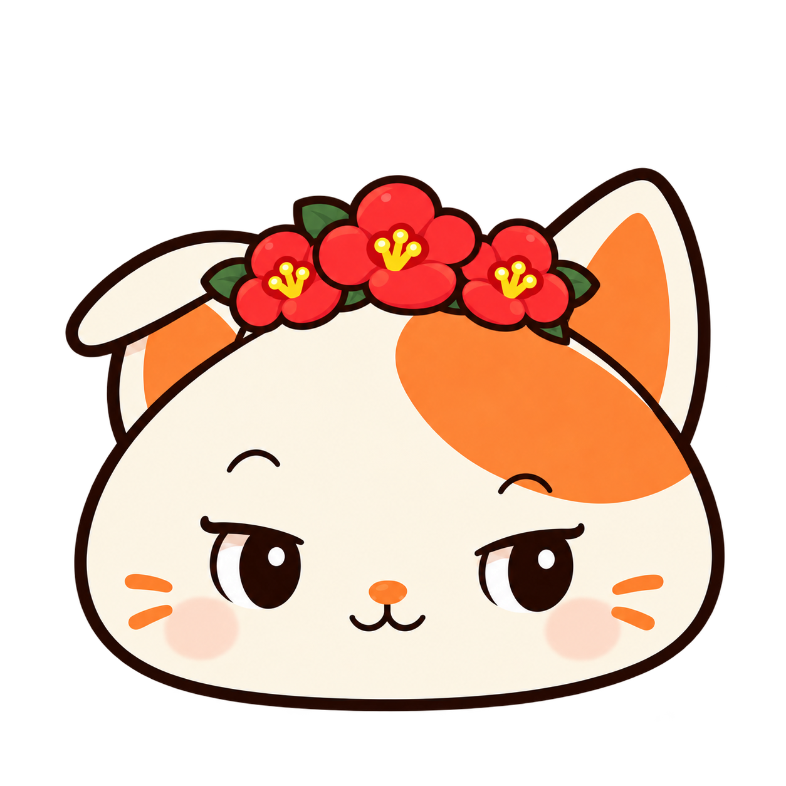

THE TASTE OF YOUR MOMENT
첫 향부터 여운까지.
- 첫 향
- 사과향 사이로 번지는 은은한 장미향
- 맛
- 홍차에 과일향이 겹쳐지는 부드러운 인상
- 여운
- 꽃향이 살짝 머무는 향긋한 여운
이런 취향이라면
꽃향은 좋아하지만 너무 진한 향은 부담스러워요.
동백을 바라보며 쉬어가는 오후. 꽃향과 과일향이 만나는 잔.
BLEND INGREDIENTS
한 잔을 만드는 원물.
- 01제주 홍차
- 02사과
- 03식용 장미
사과의 달큰한 향 위로, 은은한 꽃향이 머무는 홍차.

상자와 개별 봉투에 이어지는 핑티
A LITTLE CUBE OF YOUR FAVORITE
봉투에서 만난 초록빛,
상자 안까지 이어져요.
정사각 큐브형 종이상자에 한 가지 맛을 담았어요.
앞면은 각 블렌드의 핑티와 초록빛,
내부는 모두 픽티업의 에메랄드.
JEJU BLENDING TEA
03
FRONT / SIDE / INSIDE
작은 상자를
찬찬히 살펴보세요.
- 앞면
- 동백 핑티와 블렌드 번호 03.
같은 디자인의 봉투와 바로 연결됩니다. - 옆면
- 각 블렌드의 초록빛이 이어지는
단정한 정사각 큐브. - 내부
- 다섯 맛 모두 브랜드 에메랄드.
개별 포장 티백 10개가 담겨 있어요.
다섯 상자의 공통 내부 색
픽티업 에메랄드
ONE BLEND, TEN TEA MOMENTS
꽃이 머문 오후,
한눈에 보기.
- 맛
- 꽃이 머문 오후 · 사과 꽃향 홍차
- 블렌드 원물
- 제주 홍차 · 사과 · 식용 장미
- 구성
- 같은 맛 티백 10개 · 개별 봉투 포장
- 상자
- 정사각 큐브형 종이상자
- 포장 디자인
- 03 동백 · 맛별 초록색 외부 · 에메랄드 내부
- 찻장북
- 포함되지 않습니다. 찻장북은 별도로 만나보실 수 있어요.
다섯 가지 맛이 함께 들어 있나요?
이 상자에는 꽃이 머문 오후 한 가지 맛의 티백이 10개 들어 있습니다. 다섯 가지 맛을 함께 만나고 싶다면 픽티북 시그니처를 살펴보세요.
티백은 하나씩 포장되어 있나요?
네. 각 티백은 동백 핑티가 그려진 개별 봉투에 담깁니다.

YOUR TEA, YOUR STORY
좋았던 한 잔을,
나의 이야기로 남겨요.
찻장북에는 핑티의 동화와 차 그림일기,
내가 좋아하는 맛을 모으는 취향 지도가 있어요.